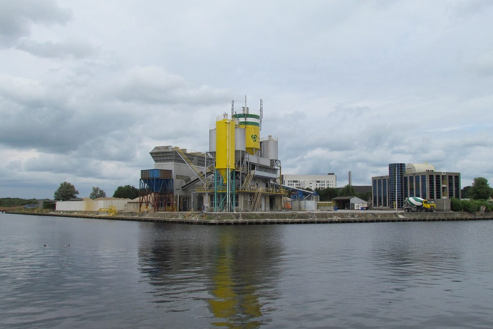

네덜란드 아메르스포르트시, 시민 에너지 단체가 낀 이설트 풍력 2기 허가 공식 거부…위트레흐트주는 절차 넘겨받겠다

개발사 REF와 사먼 에네르히 아메르스포르트의 합작 '윈드 옵 이설트', 시의회의 구속력 있는 반대 의견에 따라 집행부가 확정…시의회는 주 정부에 유감 동의안 23 대 13으로 채택
네덜란드 아메르스포르트(Amersfoort) 시 집행부가 10월 28일 이설트(Isselt) 산업단지에 풍력발전기 2기를 세우는 '윈드 옵 이설트(Wind op Isselt)' 사업의 환경허가를 공식 거부했다. 허가는 재생에너지 개발사 리뉴어블 에너지 팩토리(REF)와 시민 에너지 단체 사먼 에네르히 아메르스포르트(Samen Energie Amersfoort, SEA)가 함께 세운 W-Isselt B.V.가 올해 1월 신청했으며, 시의회가 여러 해에 걸친 논란 끝에 10월 14일 구속력 있는 반대 의견을 내자 집행부가 이를 최종 결정으로 옮겼다. 그러나 위트레흐트(Utrecht)주는 시의회 결정 뒤 한 시간도 안 돼 허가 절차를 직접 맡아 풍력발전기를 세울 수 있게 하겠다고 밝혔고, 풍력 입지 찾기를 끝없이 이어 갈 수는 없으며 접수된 의견서에서도 허가를 막을 새로운 실질적 반대 사유는 나오지 않았다는 입장을 내놨다. 이에 시의회는 주가 시의회의 민주적 결정을 충분히 존중하지 않았다며 '바람보다 빠르다'라는 이름의 유감 동의안을 찬성 23표, 반대 13표로 채택했고, 예룬 뷜타위스(Jeroen Bulthuis) 시 정무위원도 당시 주의 대응 시점과 방식이 좋게 말해도 점잖지 못했다고 말했다. 거부 결정은 정부 공고 뒤 6주 동안 열람에 부쳐지고 이해관계자는 그 기간에 중부네덜란드 법원에 이의를 낼 수 있으며, 주는 서류와 조사 결과를 다시 검토해 사업을 되살리겠다는 방침이다. 풍력발전기의 용량과 SEA의 지분 비율, 주민 참여 조건은 공개되지 않았다.
시민에너지 관점
독일이 2023년 육상풍력법으로 각 주가 2032년까지 국토의 2%를 풍력 부지로 지정하도록 한 것처럼 유럽에서는 풍력 입지를 정하는 무게가 점점 상위 정부로 옮겨 가고 있는데, 이설트에서는 시민 에너지 단체가 개발사와 함께 신청한 사업조차 시의회의 반대를 넘지 못했고 그 결정을 다시 주 정부가 뒤집으려 한다. 주 정부가 절차를 넘겨받으면 어차피 풍력은 세워지니 문제가 풀린다는 시각도 있겠지만, 23 대 13으로 통과된 유감 동의안이 보여 주듯 위에서 밀어붙인 발전소는 지역에 반감을 남기고, 그 반감은 다음 입지를 더 어렵게 만든다. 시민 단체의 참여가 이름에 그치지 않으려면 입지를 고르는 첫 단계부터 주민이 지분과 결정권을 함께 갖고, 이익이 얼마나 어떻게 돌아오는지를 스스로 확인할 수 있어야 한다. 국내 풍력 사업도 기초·광역 정부가 허가 권한을 두고 맞서기 전에, 주민 소유 비율과 의견 수렴 절차를 먼저 제도로 정해 두어야 한다.
출처: De Stad Amersfoort 2026-10-28 Tobias ten Böhmer 원문 보기
オランダ・アメルスフォールト市、市民エネルギー団体が加わるイセルトの風車2基の許可を正式に拒否…ユトレヒト州は手続きを引き継ぐ方針
開発会社REFとサーメン・エネルヒー・アメルスフォールトの合弁「ウィンド・オプ・イセルト」、市議会の拘束力ある反対意見を受け執行部が確定…市議会は州に対する遺憾動議を23対13で採択
オランダ・アメルスフォールト（Amersfoort）市の執行部は10月28日、イセルト（Isselt）産業団地に風力発電機2基を建てる「ウィンド・オプ・イセルト（Wind op Isselt）」事業の環境許可を正式に拒否した。許可は再生可能エネルギー開発会社リニューアブル・エナジー・ファクトリー（REF）と市民エネルギー団体サーメン・エネルヒー・アメルスフォールト（Samen Energie Amersfoort、SEA）が共同で設立したW-Isselt B.V.が今年1月に申請したもので、市議会が長年の議論の末に10月14日に拘束力のある反対意見を出したことを受け、執行部がこれを最終決定とした。しかしユトレヒト（Utrecht）州は市議会の決定から1時間もたたないうちに許可手続きを自ら担い、風車を建てられるようにすると表明し、風力の立地探しをいつまでも続けることはできず、提出された意見書からも許可を妨げる新たな実質的な反対理由は出ていないとの立場を示した。これに対し市議会は、州が市議会の民主的な決定を十分に尊重しなかったとして「風より速く」と名付けた遺憾動議を賛成23、反対13で採択し、イェルン・ビュルトハウス（Jeroen Bulthuis）市助役（政務担当）も当時、州の対応の時期と方法はよく言っても上品とは言えないと述べた。拒否の決定は公告後6週間縦覧に付され、利害関係者はその期間に中部オランダ地方裁判所へ不服を申し立てることができ、州は書類と調査結果を改めて検討して事業を復活させる方針だ。風車の出力やSEAの持ち分比率、住民参加の条件は公表されていない。
市民エネルギーの視点
ドイツが2023年の陸上風力法で各州に2032年までに国土の2%を風力用地に指定するよう求めたように、欧州では風力の立地を決める重みが次第に上位の政府へ移りつつあるが、イセルトでは市民エネルギー団体が開発会社と共に申請した事業でさえ市議会の反対を越えられず、その決定を今度は州政府が覆そうとしている。州が手続きを引き継げば結局風車は建つので問題は解決するという見方もあろうが、23対13で可決された遺憾動議が示すように、上から押し付けられた発電所は地域に反感を残し、その反感は次の立地をさらに難しくする。市民団体の参加が名ばかりにならないためには、立地を選ぶ最初の段階から住民が持ち分と決定権を共に持ち、利益がどれだけ、どのように戻ってくるのかを自ら確かめられなければならない。韓国の風力事業も、基礎自治体と広域自治体が許可権限をめぐって対立する前に、住民所有の比率と意見聴取の手続きをまず制度として定めておくべきだ。
出典: De Stad Amersfoort 2026-10-28 Tobias ten Böhmer 原文を読む
荷兰阿默斯福特市正式拒绝有市民能源团体参与的伊瑟尔特2台风机许可…乌得勒支省表示将接手审批程序
开发商REF与"共同能源阿默斯福特"合资的"伊瑟尔特风电"项目，市执行委员会按市议会具约束力的反对意见作出决定…市议会以23比13通过对省政府的遗憾动议
荷兰阿默斯福特（Amersfoort）市执行委员会10月28日正式拒绝了在伊瑟尔特（Isselt）工业区建设2台风力发电机的"伊瑟尔特风电"（Wind op Isselt）项目的环境许可。该许可由可再生能源开发商"可再生能源工厂"（REF）与市民能源团体"共同能源阿默斯福特"（Samen Energie Amersfoort，SEA）合资成立的W-Isselt B.V.于今年1月申请；市议会经过多年争议，于10月14日提出具有约束力的反对意见，执行委员会随后将其转为最终决定。然而，乌得勒支（Utrecht）省在市议会作出决定后不到一小时就宣布将亲自接手许可程序，使风机得以建设，并表示风电选址不能无休止地找下去，提交的意见书中也没有出现足以阻止发放许可的新的实质性反对理由。对此，市议会认为省政府没有充分尊重市议会的民主决定，以23票赞成、13票反对通过了题为"比风还快"的遗憾动议；市参事耶伦·比尔特豪斯（Jeroen Bulthuis）当时也表示，省政府回应的时机和方式说得再客气也算不上得体。拒绝决定公告后将公示6周，利害关系人可在此期间向中荷兰法院提起申诉，省政府则计划重新审查文件和调查结果，以推动项目重新上马。风机容量、SEA的持股比例和居民参与条件均未公开。
市民能源视角
正如德国2023年通过《陆上风电法》要求各州在2032年前把国土的2%划为风电用地，欧洲决定风电选址的权重正逐渐移向上级政府；而在伊瑟尔特，就连市民能源团体与开发商联合申请的项目也没能越过市议会的反对，如今省政府又要推翻这一决定。也许有人认为省政府接手后风机终究会建起来，问题也就解决了，但正如以23比13通过的遗憾动议所显示，自上而下强推的电站会在当地留下反感，而这种反感会让下一个选址更加困难。要让市民团体的参与不流于形式，居民就必须从选址的第一步起同时拥有股份和决定权，并能亲自核实收益回馈多少、如何回馈。韩国的风电项目也应在基层和广域政府围绕审批权发生对立之前，先以制度确定居民所有比例和意见征集程序。
来源: De Stad Amersfoort 2026-10-28 Tobias ten Böhmer 查看原文
Amersfoort formally refuses permit for two Isselt wind turbines backed by a citizens' energy group, as Utrecht province moves to take over the procedure
Wind op Isselt, a joint venture of developer REF and Samen Energie Amersfoort, is turned down by the municipal executive after the council's binding negative advice; the council passes a motion of regret against the province by 23 votes to 13
The municipal executive of Amersfoort in the Netherlands on 28 October formally refused the environmental permit for Wind op Isselt, a plan to build two wind turbines on the Isselt business park. The permit had been sought in January by W-Isselt B.V., a joint venture between renewable energy developer Renewable Energy Factory (REF) and the citizens' energy group Samen Energie Amersfoort (SEA), and the executive turned the city council's binding negative advice of 14 October, issued after years of debate, into a final decision. Within an hour of the council's vote, however, the province of Utrecht announced that it would run the permit procedure itself so that the turbines can still go ahead, arguing that the search for suitable wind sites cannot go on forever and that the submitted objections raised no new substantive grounds for refusing a permit. Several council groups felt the province had not respected the council's democratic decision, and the council adopted a motion of regret titled 'Faster than the wind' by 23 votes to 13, while alderman Jeroen Bulthuis said at the time that the province's timing and manner were, to put it mildly, not very elegant. The refusal will be published and open for inspection for six weeks, during which interested parties may appeal to the Central Netherlands District Court, and the province plans to review the documents and studies again with a view to reviving the project. The turbines' capacity, SEA's ownership share and the terms for resident participation have not been disclosed.
Citizen Energy View
Just as Germany's 2023 onshore wind law requires each state to designate 2% of the country's land for wind by 2032, the weight of deciding where turbines go is shifting towards higher levels of government across Europe, and in Isselt even a project filed jointly by a citizens' energy group and a developer could not get past the city council, a decision the province now wants to overturn. Some may argue that the problem is solved because the turbines will be built anyway once the province takes over, but as the motion of regret passed by 23 votes to 13 shows, power plants pushed through from above leave resentment behind, and that resentment makes the next site even harder to secure. For citizen participation to be more than a name, residents must hold both a stake and a say from the very first step of choosing a site, and be able to check for themselves how much benefit comes back and how. Wind projects in Korea, too, need the share of local ownership and the consultation procedure fixed in the rules first, before local and provincial governments end up fighting over permit powers.
Source: De Stad Amersfoort 2026-10-28 Tobias ten Böhmer Read the original